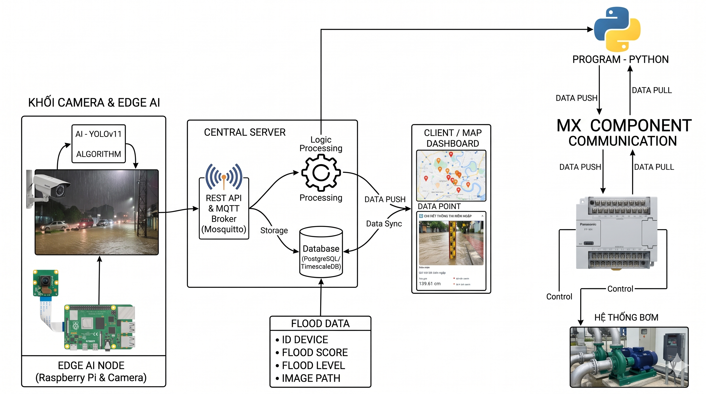

Edge AI · Thị giác máy tính · Giám sát ngập lụt
Hệ thống Edge AI giám sát ngập lụt Đang thực hiện
Tìm hiểu phương pháp xử lý và phân tích ảnh phục vụ giám sát ngập lụt đô thị, đồng thời xây dựng phương án hệ thống Edge AI và định hướng kết nối với phần cứng điều khiển.
Dự án hướng đến việc tìm hiểu giải pháp ứng dụng xử lý ảnh và Edge AI trong giám sát ngập lụt đô thị. Mục tiêu là nghiên cứu cách khai thác dữ liệu hình ảnh để hỗ trợ nhận biết tình trạng ngập, đồng thời xem xét phương án xây dựng hệ thống phù hợp với các nền tảng phần cứng tại biên.

Ở giai đoạn hiện tại, tôi đang thu thập hình ảnh tại các khu vực có tình trạng ngập và tìm hiểu những phương pháp xử lý, phân tích ảnh có thể áp dụng cho bài toán. Song song với đó, tôi đang xây dựng phương án tổng thể cho hệ thống, xác định các khối chức năng và cách chúng có thể kết nối với nhau.
Hướng phát triển tiếp theo là đánh giá phương pháp phù hợp với dữ liệu thu thập được, sau đó mới xác định mô hình AI và phương án triển khai trên thiết bị biên. Việc kết nối với Raspberry Pi và PLC để hỗ trợ điều khiển trạm bơm là định hướng của hệ thống, chưa được mô tả như một chức năng đã hoàn thiện.
| Chủ đề | Giám sát ngập lụt đô thị |
|---|---|
| Công việc hiện tại | Thu thập ảnh, tìm hiểu phương pháp xử lý và phân tích ảnh |
| Định hướng kỹ thuật | Thị giác máy tính, Edge AI |
| Phần cứng dự kiến | Camera, Raspberry Pi |
| Hướng mở rộng | Nghiên cứu phương án kết nối PLC và hệ thống điều khiển trạm bơm |
| Trạng thái | Đang nghiên cứu và xây dựng hệ thống |
Tiến trình thực hiện
01 / WORKFLOW-
Thu thập dữ liệu ảnh Đang thực hiện
Tìm kiếm và thu thập hình ảnh liên quan đến tình trạng ngập lụt để hình thành nguồn dữ liệu phục vụ quá trình nghiên cứu.
-
Tìm hiểu phương pháp xử lý và phân tích ảnh
Khảo sát các phương pháp có thể áp dụng cho dữ liệu thu thập được, từ đó lựa chọn hướng tiếp cận phù hợp với mục tiêu giám sát ngập lụt.
-
Xây dựng phương án hệ thống
Xác định các khối chức năng chính và phác thảo kiến trúc tổng thể cho hệ thống giám sát ứng dụng Edge AI.
-
Nghiên cứu triển khai và kết nối điều khiển
Ở giai đoạn tiếp theo, xem xét phương án triển khai trên thiết bị biên và khả năng kết nối với PLC để hỗ trợ điều khiển trạm bơm. Đây là hướng phát triển dự kiến.
Mục tiêu kỹ năng
02 / ĐỊNH HƯỚNG PHÁT TRIỂNXử lý ảnh & Thị giác máy tính
- Tìm hiểu quy trình thu thập và chuẩn bị dữ liệu ảnh cho bài toán thực tế.
- Khảo sát các phương pháp phân tích ảnh và mô hình AI phù hợp với bài toán giám sát ngập lụt.
Hệ thống nhúng & Tích hợp phần cứng
- Tìm hiểu cách tổ chức các thành phần của một hệ thống Edge AI trên thiết bị biên.
- Nghiên cứu phương án kết nối giữa thiết bị xử lý và hệ thống điều khiển công nghiệp ở giai đoạn phát triển tiếp theo.